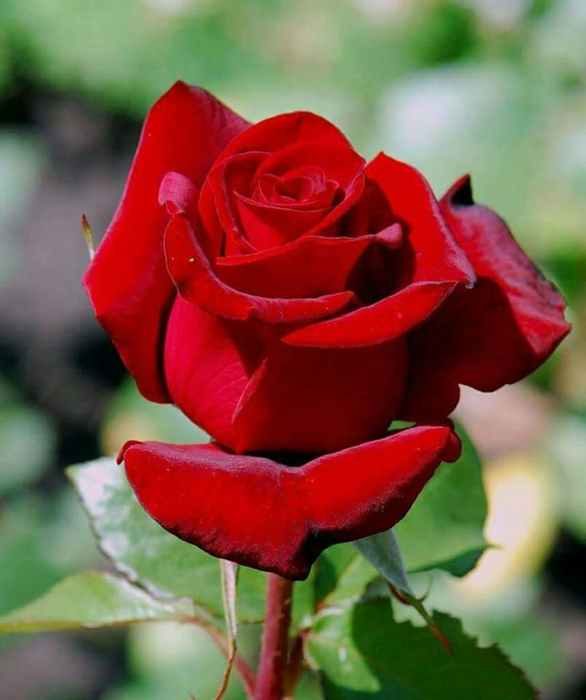
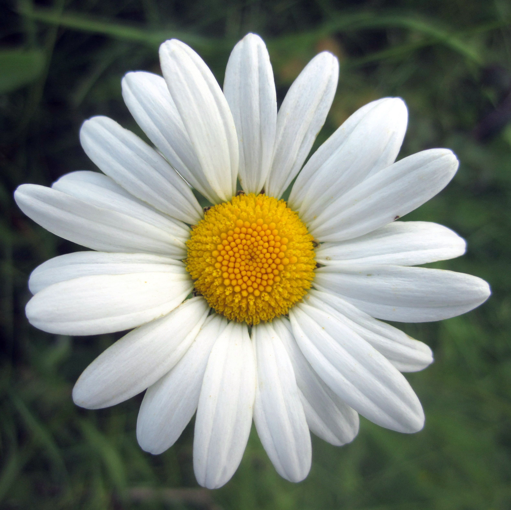
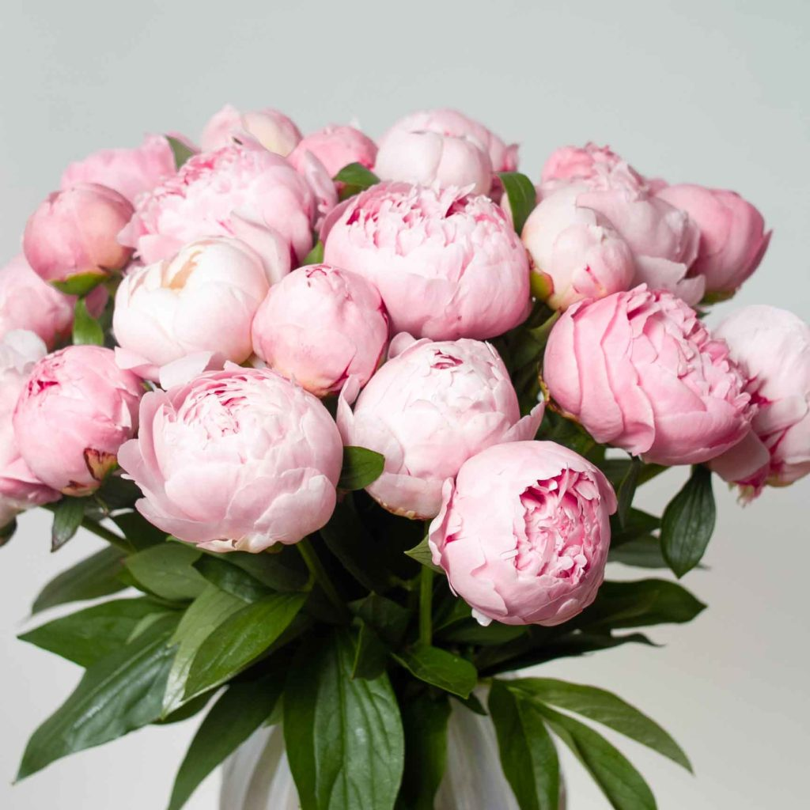
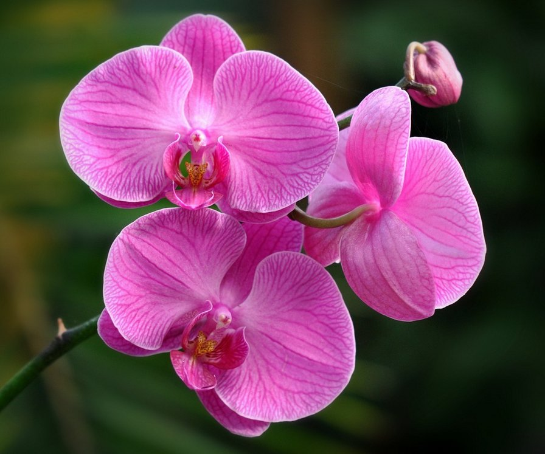
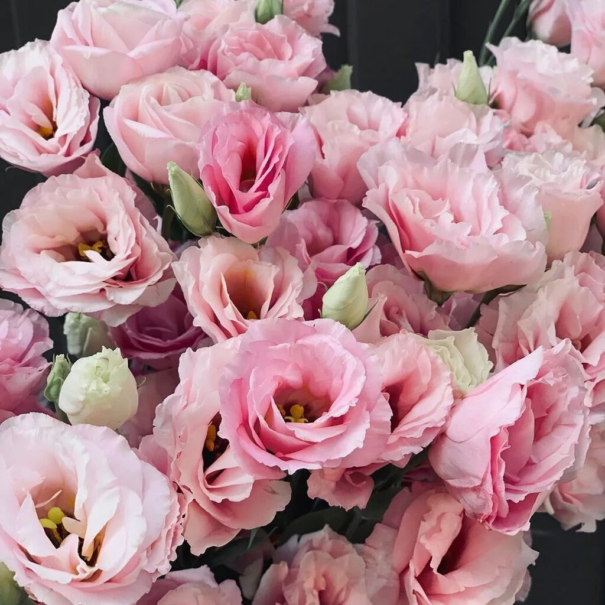
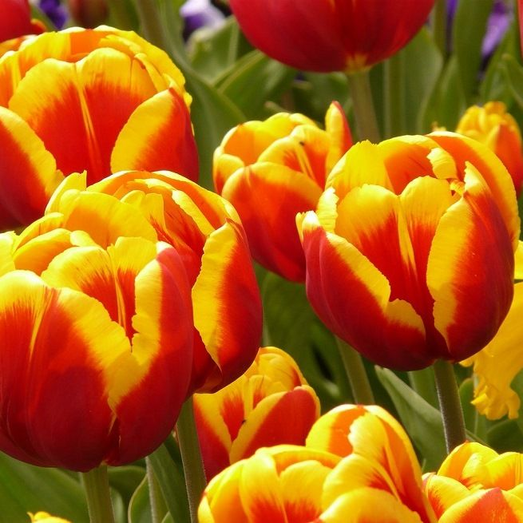
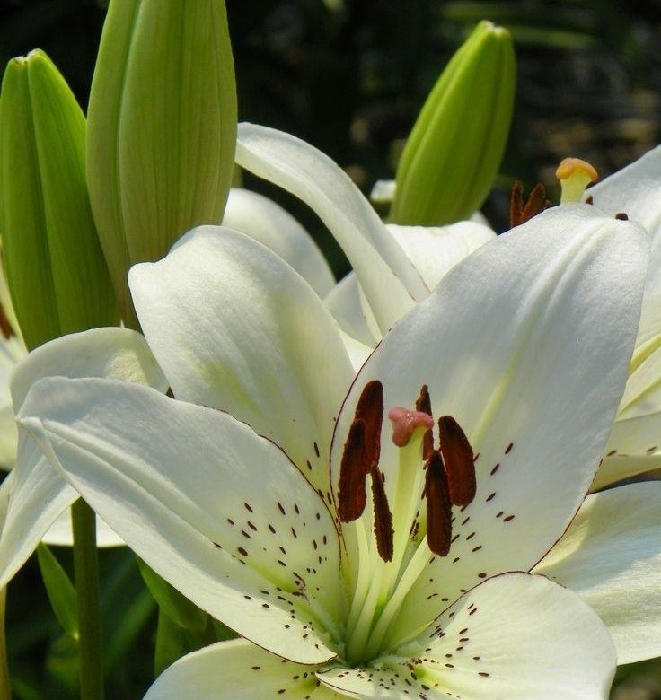
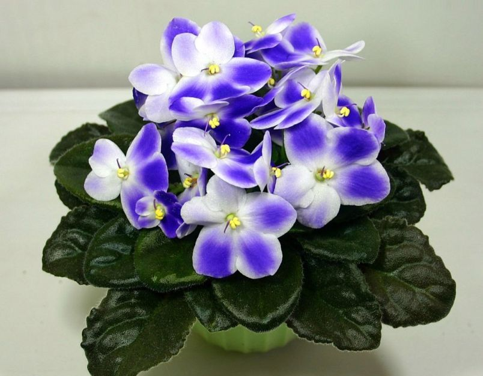

Хризантема белая. Сорт этой белой хризантемы очень редкий для нашей страны. Обычно ее привозят из Западной Европы, поэтому ее стоимость с каждым годом повышается

Красная роза. Собирательное название видов и сортов представителей рода Шипо́вник (лат. Rósa), выращиваемых человеком и растущих в дикой природе.

Ромашка. Род однолетних цветковых растений семейства астровые, или сложноцветные, по современной классификации объединяет около 70 видов невысоких пахучих трав, цветущих с первого года жизни.

Пионы. Род травянистых многолетников и листопадных кустарников. Единственный род семейства Пионовые, ранее род относили к семейству Лютиковых.

Орхидея. Это тропическое растение, крупнейшее семейство цветковых растений подкласса лилейных.

Эустома. Род растений семейства Горечавковых. Название происходит от греческих корней эу (хороший) и стома (рот).

Тюльпан. Тюльпаны относятся семейству лилейные и насчитывают более 3 тысяч сортов. Они имеют цветки с шестью лепестками, цвет и форма которых отличается от вида и сорта.

Лилии. Род многолетних луковичных растений семейства Лилейные.Отличительная характеристика соцветий — приятный, уникальный, прекрасный и слегка сладковатый аромат.

Фиалки. Это миниатюрное, популярное и долгоцветущее растение. Её часто используют для украшения интерьера, а многие собирают целые коллекции фиалок.